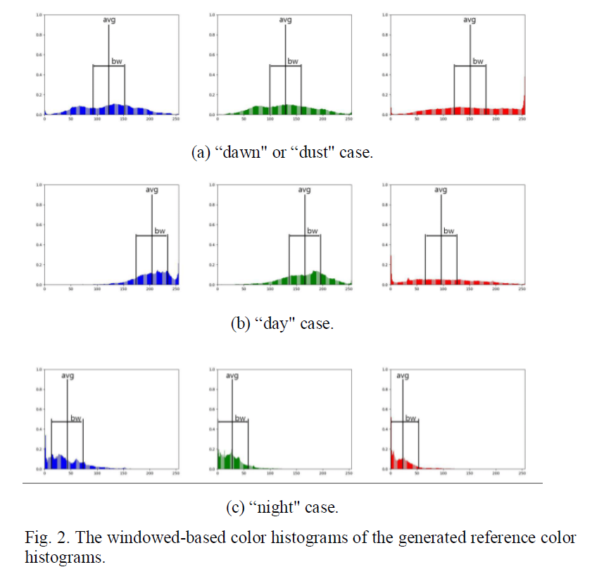

Chaelin Kim
Contact:
Email: ckim13@tulane.edu
Office: 309 Paul Hall,
Tulane University, New Orleans, LA, US
Links:


Hello, my name is Chae-Lin Kim. I am currently pursuing a Ph.D. in Computer Science at Tulane University advised by Prof. Saad Hassan, where I focus on AI-based assistive technology. My research interests include deep learning networks, particularly in the field of Human-Computer Interaction (HCI) and computer vision. I am passionate about developing technologies that enhance the quality of life.
I received both BS and MS in IT Engineering from Sookmyung Women's University.
Recent News
- I published a paper titled "Channel Selective Relation Network for Efficient Few-shot Facial Expression Recognition" at IEEE International Conference on Consumer Electronics (ICCE) 2024
- My MS graduation thesis is available => Efficient Few-shot Learning based on Channel Selective Spatial Relation Network for Facial Expression Recognition
- May 2023. Chae-Lin Kim, Byung-Gyu Kim∗, Few-shot Learning on Facial Expression Recognition: A Comprehensive Survey, Journal of Real-Time Image Processing (Springer Nature)
International Journal

|
Chae Lin Kim, Byung-Gyu Kim* Journal of Real-Time Image Processing (Springer Nature), vol. 20:52 (Article number: 52), pp. 1-18, May 06, 2023 |
International Conference

|
Chae-Lin Kim, Ga-Eun Lee, Jiwoo Kang, Byung-Gyu Kim* IEEE International Conference on Consumer Electronics (ICCE) 2024 |
|  |
Ye-Ji Kim, Chae-Lin Kim, Han-Lim Lee and Byung-Gyu Kim* International Conference on Multimedia Information Technology and Applications (MITA), July 2022. |
Korean Conference

|
Han-Lim Lee, Chae-Lin Kim, Byung-Gyu Kim*, and Gwang-Ho Kim KMMS Spring Conference (KMMS), vol. 26, no. 1, pp. 77-78, May. 2023. |

|
Chae-Lin Kim, Young-Ju Choi, Byung-Gyu Kim*, Eun-Ha Park, and Kyung-Tae Lee KMMS Spring Conference (KMMS), vol. 24, no. 2, pp. 14-17, Nov. 2021. |

|
Chae-Lin Kim, Jeong-Bin Seo, and Byung-Gyu Kim* KMMS Spring Conference (KMMS), vol. 24, no. 1, pp. 565-567, April. 2021. |
Projects
|
Funding: Ministry of SMEs and Startups, Rep. of Korea |
|
Funding: Ministry of Culture, Sports and Tourism (MCST) and from Korea Copyright Commission, Rep. of Korea |
|
Funding: Ministry of Science and ICT, Rep. of Korea (NRF) |
|
Funding: Ministry of SMEs and Startups, Rep. of Korea |